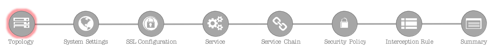
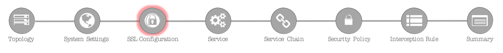
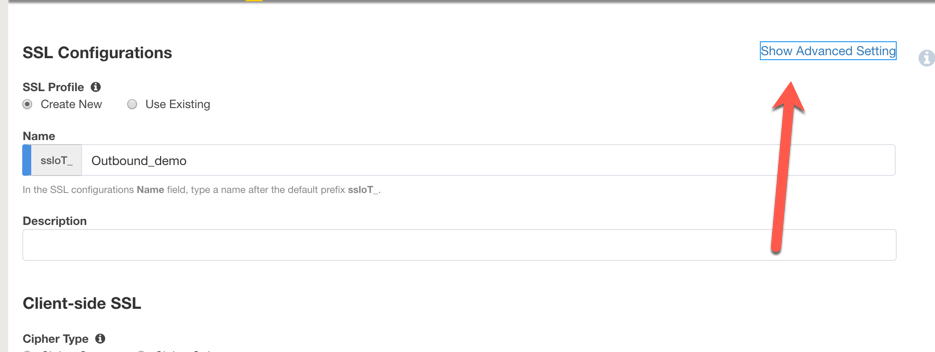
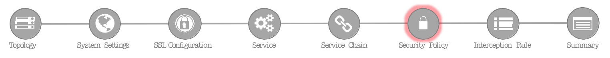
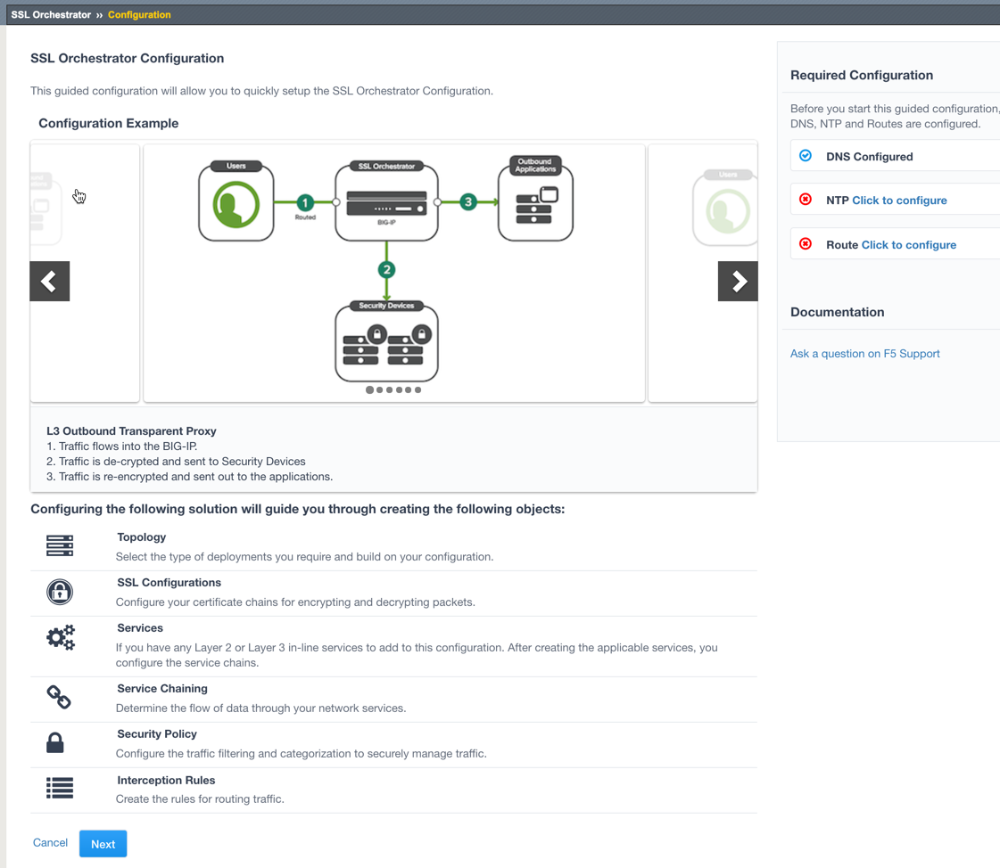

Community Training Classes & Labs > F5 SSL Orchestrator Index
3.2.1. LAB 1 – CREATE A TRANSPARENT FORWARD PROXY SSLO¶
The majority of enterprise forward proxy configurations will involve a single F5 platform performing the SSL visibility task. The SSL Orchestrator has been designed with that principle in mind and performs robust security service chaining of security devices attached to a single appliance. SSL Orchestrator 5.0 now makes configuration of a single-box deployment simple and intuitive. Please follow the steps below to create a transparent forward proxy SSL Orchestrator configuration.
3.2.1.1. Step 1: Review the lab environment and map out the services and endpoints¶
Review the “SSL Orchestrator Lab Environment” section above. This lab will attach one of each type of security service (HTTP, ICAP, L2, L3, TAP) to SSLO for an outbound forward proxy traffic flow. Afterwards, an internal client will be able to access remote (Internet) resources through SSLO, providing decrypted, inspectable traffic to the security services.
The client is attached to a 10.20.0.0/24 network and is assigned the IP 10.20.0.60. This network is attached to the BIG-IP 1.1 interface.
The L2 device is an Ubuntu 14.04 LTS server configured to bridge its eth1 and eth2 interfaces. Its inbound VLAN (traffic to it) is attached to the BIG-IP 1.6 interface. Its outbound interface (traffic coming from it) is attached to the BIG-IP 1.7 interface.
The L3 device is an Ubuntu 14.04 LTS server configured to route between its eth1.10 and eth1.20 (tagged) interfaces. Its inbound VLAN (traffic to it) is attached to the BIG-IP 1.3 (VLAN tag 30) interface and has an IP of 198.19.64.64/25. Its outbound interface (traffic coming from it) is attached to the BIG-IP 1.3 (VLAN tag 60) interface and has an IP of 198.19.64.130/25. Its default gateway is 198.19.64.245, which will be a VLAN self-IP on the BIG-IP.
The TAP device is an Ubuntu 14.04 LTS server configured with a single eth1 interface. That interface is attached to the BIG-IP 1.4 interface.
The DLP/ICAP device is an Ubuntu 14.04 LTS server configured with a single eth1 interface. That interface is attached to the BIG-IP 1.5 interface and has an IP of 10.70.0.10 and listening on port 1344. The box is running c-icap and Squid/Clamav.
The Explicit Proxy device is an Ubuntu 14.04 LTS server configured with Squid. Its interfaces are eth1.30 and eth1.40 (tagged). Its inbound VLAN (traffic to it) is attached to the BIG-IP 1.3 (VLAN tag 110) interface and has an IP of 198.19.96.66/25. Its outbound interface (traffic coming from it) is attached to the BIG-IP
1.3 (VLAN tag 120) interface and has an IP of 198.19.96.136/25. Its default gateway is 198.19.96.245, which will be a VLAN self-IP on the BIG-IP.
The outbound network is attached to the BIG-IP 1.2 interface, in the 10.30.0.0/24 subnet, and has a gateway of 10.30.0.1.
In the lab, client inbound, Internet outbound, and DLP VLANs and self-IPs are already created.
3.2.1.2. Step 2: Fulfill the SSL Orchestrator prerequisites¶
There are a number of objects that SSL Orchestrator does not create and expects to exist before deploying the iApp. You must create the following objects before starting the iApp:
- Import the CA certificate and private key – in order to terminate and re-encrypt outbound SSL traffic, SSL Forward Proxy must re-issue, or rather “forge” a new server certificate to the client. In order to perform this re-issuance process, the BIG-IP must possess a certificate authority (CA) certificate and associated private key. This lab environment already has a subordinate CA certificate and private key installed.
- Create the client inbound VLAN and self-IP – create the VLAN and self-IP that connects the client to the BIG-IP. In this lab that’s the 10.20.0.0/24 subnet and interface 1.1 on the BIG-IP. This lab environment already has this VLAN and self-IP created.
- Create the Internet outbound VLAN and self-IP – create the VLAN and self-IP that connects the BIG-IP to the outbound Internet router. In this lab that’s the 10.30.0.0/24 subnet and interface 1.2 on the BIG-IP. This lab environment already has this VLAN and self-IP created.
- Create the DLP VLAN and self-IP – if it is desired to isolate the DLP/ICAP device, create the VLAN and self- IP that connects the DLP device to the BIG-IP. In this lab that’s the 10.70.0.0/24 subnet and interface 1.5 on the BIG-IP. The DLP security device is listening on 10.70.0.10 and ICAP is listening on port 1344. This lab environment already has this VLAN and self-IP created.
- Create the default internet route for outbound traffic – the iApp provides an option to leverage a defined gateway pool or use the system default route. If a gateway pool is not used, they system route table will need to have a default route used to reach Internet destination. We’ll use a gateway pool defined within SSLO to create this Route.
3.2.1.3. Step 3: Create the SSL Orchestrator deployment through Guided Configuration¶
The SSL Orchestrator Guided Configuration presents a completely new and streamlined user experience. This workflow-based architecture provides intuitive, re-entrant configuration steps tailored to the selected topology.
Topology System Settings SSL Configuration Service Service Chain Security Policy Interception Rule Summary
The following steps will walk through the Guided Configuration (GC) to build a simple transparent forward proxy.
- SSL Orchestrator- click on SSL Orchestrator panel then click **Configuration **
Initialization – if this is the first time accessing SSLO in a new BIG-IP build, upon first access, GC will automatically load and deploy the built-in SSLO package.

Configuration review and prerequisites – take a moment to review the topology options and workflow configuration steps involved. Optionally satisfy any of the DNS, NTP and Route prerequisites from this page. Keep in mind, however, that aside from NTP, the SSLO GC will provide an opportunity to define DNS and route settings later in the workflow. No other configurations are required on this page, so click Next.

Topology Properties – SSLO now creates discreet configurations based on the selected topology. For example, in previous versions of SSLO, a transparent and explicit forward proxy might be defined together. In SSLO 5.0, these are configured separately. An explicit forward proxy topology will ultimately create an explicit proxy listener and its relying transparent proxy lister, but the transparent listener will be bound only to the explicit proxy tunnel. If a subsequent transparent forward proxy topology is configured, it will not overlap the existing explicit proxy objects. The Topology Properties page provides the following options,
The Protocol option presents four protocol types:
TCP – this option creates a single TCP wildcard interception rule for the L3 Inbound, L3 Outbound L3, and L3 Explicit Proxy topologies.
UDP – this option creates a single UDP wildcard interception rule for L3 Inbound and L3 Outbound topologies.
Other – this option creates a single any protocol wildcard interception rule for L3 Inbound and L3 Outbound topologies, typically used for non-TCP/UDP traffic flows.
Any – this option creates the TCP, UDP and non-TCP/UDP interception rules for outbound traffic flows.
The SSL Orchestrator Topologies option page presents six topologies: o L3 Explicit Proxy – this is the traditional explicit forward proxy. o L3 Outbound – this is the traditional transparent forward proxy.
L3 Inbound – this is a reverse proxy “gateway” configuration. In its simplest form, this topology builds an SSLO environment designed to sit *in front of* another ADC or routed path. Advanced options allow it to define a pool for more directed traffic flow, but alone does not provide the same flexibility afforded a typical LTM reverse proxy virtual server. It also must perform re-encryption on egress. The primary use case for this topology is as a gateway SSL visibility solution, potentially sitting at a boundary edge in front of multiple internal ADC environments.
L2 Inbound – the layer 2 topology options insert SSLO as a bump-in-the-wire in an existing routed path, where SSLO presents no IP addresses on its outer edges. The L2 Inbound topology provides a transparent path for inbound traffic flows.
L2 Outbound – the layer 2 topology options insert SSLO as a bump-in-the-wire in an existing routed path, where SSLO presents no IP addresses on its outer edges. The L2 Outbound topology provides a transparent path for outbound traffic flows.
Existing Application – this topology is designed to work with existing LTM applications. Whereas the L3 Inbound topology provides an inbound gateway function for SSLO, Existing Application works with LTM virtual servers that already perform their own SSL handling and client-server traffic management. The Existing Application workflow proceeds directly to service creation and security policy definition, then exits with an SSLO-type access policy and per-request policy that can easily be consumed by an LTM virtual server.
For this lab,
- Name: Outbound_demo
- Protocol: Any – this will create separate TCP, UDP and non-TCP/UDP interception rules.
- IP Family: IPv4
- Topology: L3 Outbound
- Click Save & Next.

SSL Configurations – this page defines the specific SSL settings for the selected topology, in this case a forward proxy, and controls both client-side and server-side SSL options. If existing SSL settings are available (from a previous workflow), it can be selected and re-used. Otherwise the SSL Configurations page creates new SSL settings for this workflow. For this lab, create a new SSL profile,
Click on Show Advance Settings
3.2.1.3.1. ¶
Client-side SSL
- Cipher Type – cipher type can be a Cipher Group or Cipher String. If the former, select a previously-defined cipher group (from Local Traffic – Ciphers – Groups). If the latter, enter a cipher string that appropriately represents the client-side TLS requirement. For most environments, DEFAULT is optimal. For this lab, lease Cipher String selected.
- Certificate Key Chain – the certificate key chain represents the certificate and private key used as the “template” for forged server certificates. While re-issuing server certificates on-the-fly is generally easy, private key creation tends to be a CPU-intensive operation. For that reason, the underlying SSL Forward Proxy engine forges server certificates from a single defined private key. This setting gives customers the opportunity to apply their own template private key, and optionally store that key in a FIPS-certified HSM for additional protection. The built-in “default” certificate and private key uses 2K RSA and is generated from scratch when the BIG-IP system is installed. The pre-defined default.crt and default.key can be left as is. Click Done.
- CA Certificate Key Chain – an SSL forward proxy must re-sign, or “forge” remote server certificate to local clients using a local certificate authority (CA) certificate, and local clients must trust this local CA. This setting defines the local CA certificate and private key used to perform the forging operation. Click the pencil icon to Edit, then select subca.f5demolabs.com for both Certificate and Key, and click Done.
- [Advanced] Bypass on Handshake Alert – this setting allows the underlying SSL Forward Proxy process to bypass SSL decryption if an SSL handshake error is detected on the server side. It is recommended to leave this disabled.
- [Advanced] Bypass on Client Certificate Failure – this setting allows the underlying SSL Forward Proxy process to bypass SSL decryption if it detects a Certificate request message from the server, as in when a server requires mutual certificate authentication. It is recommended to leave this disabled.
Server-side SSL
- Cipher Type – cipher type can be a Cipher Group or Cipher String. If the former, select a previously-defined cipher group (from Local Traffic – Ciphers – Groups). If the latter, enter a cipher string that appropriately represents the server-side TLS requirement. For most environments, DEFAULT is optimal.
- Trusted Certificate Authority – browser vendors routinely update the CA certificate stores in their products to keep up with industry security trends, and to account for new and revoked CAs. In the SSL forward proxy use case, however, the SSL visibility product now performs all server-side certificate validation, in lieu of the client browser, and should therefore do its best to maintain the same industry security trends. BIG-IP ships with a CA certificate bundle that maintains a list of CA certificates common to the browser vendors. However, a more comprehensive bundle can be obtained from the F5 Downloads site. For this lab, select the built-in ca-bundle.crt.
- [Advanced] Expire Certificate Response – SSLO performs validation on remote server certificates and can control what happens if it receives an expired server certificate. The options are drop, which simply drops the traffic, and ignore, which mirrors an expired forged certificate to the client. The default and recommended behavior for forward proxy is to drop traffic on an expired certificate.
- [Advanced] Untrusted Certificate Authority – SSLO performs validation on remote server certificates and can control what happens if it receives an untrusted server certificate, based on the Trusted Certificate Authority bundle. The options are drop, which simply drops the traffic, and ignore, which allows the traffic and forges a good certificate to the client. The default and recommended behavior for forward proxy is to drop traffic on an untrusted certificate.
- [Advanced] OCSP – this setting selects an existing or can create a new OCSP profile for server-side Online Certificate Status Protocol (OCSP) and OCSP stapling. With this enabled, if a client issues a Status_Request message in its ClientHello message (an indication that it supports OCSP stapling), SSLO will issue a corresponding Status_Request message in its server-side TLS handshake. SSLO will then forge the returned OCSP stapling response back to the client. If the server does not respond with a staple but contains an Authority Info Access (AIA) field that points to an OCSP responder URL, SSLO will perform a separate OCSP request. The returned status is then mirrored in the stapled client-side TLS handshake. Leave it at —SELECT—-
- [Advanced] CRL – this setting selects an existing or can create a new CRL profile for server- side Certificate Revocation List (CRL) validation. With this enabled, SSLO attempts to match server certificates to locally-cached CRLs. Leave it at —SELECT—-
Click Save & Next.
Services List – the Services List page is used to define security services that attach to SSLO. The 5.0 SSLO Guided Configuration now includes a services catalog that contains common product integrations. Beneath each of these catalog options is one of the five basic service types. The service catalog also provides “generic” security services. Depending on screen resolution, it may be necessary to scroll down to see additional services.
Inline layer 2 service – select the FireEye Inline Layer 2 service from the catalog and click Add, or simply double-click the FireEye Inline Layer 2 service, or any other Inline Layer 2 service in the catalog.
- Name – provide a unique name to this service (example “FireEye”).
- Network Configuration – paths define the network interfaces that
take inspectable traffic to the inline service and receive traffic
from the service. Click Add.
- Ratio – inline security services are natively load balanced, so this setting defines a ratio, if any for the load balanced pool members. Enter 1.
- From BIGIP VLAN – this is the interface taking traffic to the inline service. Select the Create New option, enter a unique name (ex. FireEye_in), select the F5 interface connecting to the inbound side of the service, and add a VLAN tag value if required. For this lab, select interface 1.6.
- To BIGIP VLAN – this is the interface receiving traffic from the inline service. Select the Create New option, enter a unique name (ex. FireEye_out), select the F5 interface connecting to the outbound side of the service, and add a VLAN tag value if required. For this lab, select interface 1.7.
Click Done.
Service Action Down – SSLO also natively monitors the load balanced pool of security devices, and if all pool members fail, can actively bypass this service (Ignore), or stop all traffic (Reset, Drop). For this lab, leave it set to Ignore.
Enable Port Remap – this setting allows SSLO to remap the port of HTTPS traffic flowing across this service. This is advantageous when a security service defines port 443 traffic as encrypted HTTPS and natively ignores it. By remapping HTTPS traffic to, say, port 8080, the security service will inspect the traffic. For this lab, enable (check) this option and enter a port value value (ex. 8080).
iRules – SSLO now allows for the insertion of additional iRule logic at different points. An iRule defined at the service only affects traffic flowing across this service. It is important to understand, however, that these iRules must not be used to control traffic flow (ex. pools, nodes, virtuals, etc.), but rather should be used to view/modify application layer protocol traffic. For example, an iRule assigned here could be used to view and modify HTTP traffic flowing to/from the service. Additional iRules are not required, however, so leave this empty.
Click Save.
Inline layer 3 service – select the Generic Inline Layer 3 service from the catalog and click Add, or simply double-click the Generic Inline Layer 3 service.

{kind=link}
{kind=link}
{kind=link}
{kind=link}
{kind=link}
{kind=link}
{kind=link}
{kind=link}
{kind=link}
{kind=link}
{kind=link}
{kind=link}
{kind=link}
{kind=link}
{kind=link}
Name – provide a unique name to this service (example “IPS”).
IP Family – this setting defines the IP family used with this layer 3 service. Leave it set to IPv4.
Auto Manage Addresses – when enabled the Auto Manage Addresses setting provides a set of unique, non-overlapping, non-routable IP addresses to be used by the security service. If disabled, the To and From IP addresses must be configured manually. It is recommended to leave this option enabled (checked).
To Service Configuration – the “To Service” defines the network connectivity from SSLO to the inline security device.
- To Service – with the Auto Manage Addresses option enabled, this IP address will be pre-defined, therefore the inbound side of the service must match this IP subnet. With the Auto Manage Addresses option disabled, the IP address must be defined manually. For this lab, leave the 198.19.64.7/25 address intact.
- VLAN – select the Create New option, provide a unique name (ex. IPS_in), select the F5 interface connecting to the inbound side of the service, and add a VLAN tag value if required. For this lab, select interface 1.3 and VLAN tag 50.
Service Down Action – SSLO also natively monitors the load balanced pool of security devices, and if all pool members fail, can actively bypass this service (Ignore), or stop all traffic (Reset, Drop). For this lab, leave it set to Ignore.
L3 Devices – this defines the inbound-side IP address of the inline layer 3 service, used for routing traffic to this device. Multiple load balanced IP addresses can be defined here. Click Add, enter 198.19.64.64, then click Done.
From Service Configuration – the “From Service” defines the network connectivity from the inline security device to SSLO.
- From Service – with the Auto Manage Addresses option enabled, this IP address will be pre-defined, therefore the outbound side of the service must match this IP subnet. With the Auto Manage Addresses option disabled, the IP address must be defined manually. For this lab, leave the 198.19.65.245/25 address intact.
- VLAN – select the Create New option, provide a unique name (ex. IPS_out), select the F5 interface connecting to the outbound side of the service, and add a VLAN tag value if required. For this lab, select interface 1.3 and VLAN tag 60.
Enable Port Remap – this setting allows SSLO to remap the port of HTTPS traffic flowing across this service. This is advantageous when a security service defines port 443 traffic as encrypted HTTPS and natively ignores it. By remapping HTTPS traffic to, say, port 8181, the security service will inspect the traffic. For this lab, enable (check) this option and enter a port value value (ex. 8181).
Manage SNAT Settings – SSLO now defines an option to enable SNAT (source NAT) across an inline layer 3/HTTP service. The primary use case for this is horizontal SSLO scaling, where independent SSLO devices are scaled behind a separate load balancer but share the same inline layer 3/HTTP services. As these devices must route back to SSLO, there are now multiple SSLO devices to route back to. SNAT allows the layer 3/HTTP device to know which SSLO sent the packets for proper routing. SSLO scaling also requires that the Auto Manage option be disabled, to provide separate address spaces on each SSLO. For this, leave it set to None.
iRules – SSLO now allows for the insertion of additional iRule logic at different points. An iRule defined at the service only affects traffic flowing across this service. It is important to understand, however, that these iRules must not be used to control traffic flow (ex. pools, nodes, virtuals, etc.), but rather should be used to view/modify application layer protocol traffic. For example, an iRule assigned here could be used to view and modify HTTP traffic flowing to/from the service. Additional iRules are not required, however, so leave this empty.
Click Save.
Inline HTTP service – an inline HTTP service is defined as an explicit or transparent proxy for HTTP (web) traffic. Select the WSA HTTP Proxy service from the catalog and click Add, or simply double- click the WSA HTTP Proxy service, or any other HTTP Proxy service in the catalog.
{kind=link}
{kind=link}
{kind=link}
{kind=link}
- Name – provide a unique name to this service (example “Proxy”).
- IP Family – this setting defines the IP family used with this layer 3 service. Leave it set to IPv4.
- Auto Manage Addresses – when enabled the Auto Manage Addresses setting provides a set of unique, non-overlapping, non-routable IP addresses to be used by the security service. If disabled, the To and From IP addresses must be configured manually. It is recommended to leave this option enabled (checked).
- Proxy Type – this defines the proxy mode that the inline HTTP service is in. For this lab, set this option to Explicit.
- To Service Configuration – the “To Service” defines the network
connectivity from SSLO to the inline security device.
- To Service – with the Auto Manage Addresses option enabled, this IP address will be pre-defined, therefore the inbound side of the service must match this IP subnet. With the Auto Manage Addresses option disabled, the IP address must be defined manually. For this lab, leave the 198.19.96.7/25 address intact.
- VLAN – select the Create New option, provide a unique name (ex. Proxy_in), select the F5 interface connecting to the inbound side of the service, and add a VLAN tag value if required. For this lab, select interface 1.3 and VLAN tag 110.
- Service Down Action – SSLO also natively monitors the load balanced pool of security devices, and if all pool members fail, can actively bypass this service (Ignore), or stop all traffic (Reset, Drop). For this lab, leave it set to Ignore.
{kind=link}
- HTTP Proxy Devices – this defines the inbound-side IP address of the inline HTTP service, used for passing traffic to this device. Multiple load balanced IP addresses can be defined here. For a transparent proxy HTTP service, only an IP address is required. For an explicit proxy HTTP service, the IP address and listening port is required. Click Add, enter 198.19.96.66 for the IP Address, and 3128 for the Port, then click Done.
- From Service Configuration – the “From Service” defines the
network connectivity from the inline security device to SSLO.
- From Service – with the Auto Manage Addresses option enabled, this IP address will be pre-defined, therefore the outbound side of the service must match this IP subnet. With the Auto Manage Addresses option disabled, the IP address must be defined manually. For this lab, leave the 198.19.96.245/25 address intact.
- VLAN – select the Create New option, provide a unique name (ex. Proxy_out), select the F5 interface connecting to the outbound side of the service, and add a VLAN tag value if required. For this lab, select interface 1.3 and VLAN tag 120.
- Manage SNAT Settings – SSLO now defines an option to enable SNAT (source NAT) across an inline layer 3/HTTP service. The primary use case for this is horizontal SSLO scaling, where independent SSLO devices are scaled behind a separate load balancer but share the same inline layer 3/HTTP services. As these devices must route back to SSLO, there are now multiple SSLO devices to route back to. SNAT allows the layer 3/HTTP device to know which SSLO sent the packets for proper routing. SSLO scaling also requires that the Auto Manage option be disabled, to provide separate address spaces on each SSLO. For this, leave it set to None.
- Authentication Offload – when an Access authentication profile is attached to an explicit forward proxy topology, this option will present the authenticated username value to the service as an X-Authenticated-User HTTP header. For this lab, leave it disabled (unchecked).
- iRules – SSLO now allows for the insertion of additional iRule logic at different points. An iRule defined at the service only affects traffic flowing across this service. It is important to understand, however, that these iRules must not be used to control traffic flow (ex. pools, nodes, virtuals, etc.), but rather should be used to view/modify application layer protocol traffic. For example, an iRule assigned here could be used to view and modify HTTP traffic flowing to/from the service. Additional iRules are not required, however, so leave this empty.
- Click Save.
{kind=link}
- ICAP service – an ICAP service is an RFC 3507-defined service that provides some set of services over the ICAP protocol. Select the Digital Guardian ICAP service from the catalog and click Add, or simply double-click the Digital Guardian ICAP service, or any other ICAP service in the catalog.
{kind=link}
- Name – provide a unique name to this service (example “DLP”).
- IP Family – this setting defines the IP family used with this layer 3 service. Leave it set to IPv4.
- ICAP Devices – this defines the IP address of the ICAP service, used for passing traffic to this device. Multiple load balanced IP addresses can be defined here. Click Add, enter
10.70.0.10 for the IP Address, and 1344 for the Port, and then click Done.
- ICAP Headers – select either Default or Custom to specify additional ICAP headers. To add custom headers, select Custom, otherwise leave as Default.
{kind=link}
- OneConnect – the F5 OneConnect profile improves performance by reusing TCP connections to ICAP servers to process multiple transactions. If the ICAP servers do not support multiple ICAP transactions per TCP connection, do not enable this option. For this lab, leave the OneConnect setting enabled.
- Request URI Path – this is the RFC 3507-defined URI request path to the ICAP service. Each ICAP security vendor will differ with respect to request and response URIs, and preview length, so it is important to review the vendor’s documentation. In this lab, enter
/squidclamav.
- Response URI Path – this is the RFC 3507-defined URI response path to the ICAP service. Each ICAP security vendor will differ with respect to request and response URIs, and preview length, so it is important to review the vendor’s documentation. In this lab, enter
/squidclamav.
- Preview Max Length(bytes) – this defines the maximum length of the ICAP preview. Each ICAP security vendor will differ with respect to request and response URIs, and preview length, so it is important to review the vendor’s documentation. A zero-length preview length implies that data will be streamed to the ICAP service, similar to an HTTP 100/Expect process, while any positive integer preview length defines the amount of data (in bytes) that are transmitted first, before streaming the remaining content. The ICAP service in this lab environment does not support a complete stream, so requires a modest amount of initial preview. In this lab, enter 524288.
- Service Down Action – SSLO also natively monitors the load balanced pool of security devices, and if all pool members fail, can actively bypass this service (Ignore), or stop all traffic (Reset, Drop). For this lab, leave it set to Ignore.
- HTTP Version – this defines whether SSLO sends HTTP/1.1 and HTTP/1.0 requests to the ICAP service.
- ICAP Policy – an ICAP policy is a pre-defined LTM CPM policy that can be configured to control access to the ICAP service based on attributes of the HTTP request or response. ICAP processing is enabled by default, so an ICAP CPM policy can be used to disable the request and/or response ADAPT profiles.
- Click Save.
{kind=link}
- TAP service – a TAP service is a passive device that simply receives a copy of traffic. Select the Cisco Sourcefire TAP service from the catalog and click Add, or simply Double-click the Cisco Sourcefire TAP service, or any other TAP service in the catalog.
{kind=link}
- Name - provide a unique name to this service (example “TAP”).
- Mac Address – for a tap service that is not directly connected to the F5, enter the device’s MAC address. For a tap service that is directly connected to the F5, the MAC address does not matter and can be arbitrarily defined. For this lab, enter 12:12:12:12:12:12.
- VLAN – this defines the interface connecting the F5 to the TAP service. Click Create New and provide a unique name (ex. TAP_in).
- Interface – select the 1.4 interface.
- Enable Port Remap – this setting allows SSLO to remap the port of HTTPS traffic flowing to this service. For this lab, leave the option disabled (unchecked).
- Click Save.
- Click Save & Next.
{kind=link}
{kind=link}
- Service Chain List – service chains are arbitrarily-ordered lists of security devices. Based on environmental requirements, different service chains may contain different re-used sets of services, and different types of traffic can be assigned to different service chains. For example, HTTP traffic may need to go through all of the security services, while non-HTTP traffic goes through a subset, and traffic destined to a financial service URL can bypass decryption and still flow through a smaller set of security services.
{kind=link}
- Click Add to create a new service chain containing all of the security services.
- Name – provide a unique name to this service (ex. “my_service_chain”).
- Services – select any number of desired service and move them into the Selected Service Chain Order column, optionally also ordering them as required. In this lab, select all of the services.
- Click Save.
{kind=link}
- Click Add to create a new service chain for just the L2 (ex. FireEye)
and TAP services.
- Name – provide a unique name to this service (ex. “my_sub_service_chain”).
- Services – select the inline layer 2 ssloS_FireEye and ssloS_TAP services.
- Click Save.
{kind=link}
- Click Save & Next
{kind=link}
Security Policy – security policies are the set of rules that govern how traffic is processed in SSLO. The “actions” a rule can take include,
- Whether or not to allow the traffic
- Whether or not to decrypt the traffic
- Which service chain (if any) to pass the traffic through
The SSLO Guided Configuration presents an intuitive rule-based, drag-and-drop user interface for the definition of security policies.

In the background, SSLO maintains these security policies as visual per-request policies. If traffic processing is required that exceeds the capabilities of the rule-based user interface, the underlying per-request policy can be managed directly.
For the lab, create an additional rule to bypass SSL for “Financial Data and Services” and “Health and Medicine” URL categories.
Click Add to create a new rule.
Name – provide a unique name for the rule (ex. “urlf_bypass”).
Conditions
- Select HTTP Connect Catagory
- Category Lookup (All) – add Financial Data and Services and Health and Medicine.
Action – select Allow.
Service Chain – select the ssloSC_my_sub_service_chain L2/TAP service chain.
Click OK.
Notice in the list of rules that the All Traffic rule intercepts but does not send traffic to a service chain. For the lab, edit this rule to send all intercepted traffic to a service chain.
Click the pencil icon to edit this rule.
Service Chain – select the service chain containing all of the services.
Click OK.

Click Save & Next.

Interception Rule – interception rules are based on the selected topology and define the “listeners”, analogous to LTM virtual servers, that accept and process different types of traffic (ex. TCP, UDP, other). The resulting LTM virtual servers will bind the SSL settings, VLANs, IPs, and security policies created in the topology workflow.
- Ingress Network (VLANs) – this defines the VLANs through which traffic will enter. For a transparent forward proxy topology, this would be a client-side VLAN. Select client-net.
- L7 Interception Rules – FTP and email protocol traffic are all “server-speaks-first” protocols, and therefore SSLO must process these separately from typical client-speaks-first protocols like HTTP. This selection enables processing of each of these protocols, which create separate port-based listeners for each. As required, selectively enable the additional protocols that need to be decrypted and inspected through SSLO. Select FTP, IMAP, POP3 and SMTP
- Click Save & Next.
{kind=link}
{kind=link}
Egress Setting – traffic egress settings are now defined per-topology and manage both the gateway route and outbound SNAT settings.
Manage SNAT Settings – enables per-topology instance SNAT settings. For this lab, select Auto Map.
Gateways – enables per-topology instance gateway routing. Options are to use the system default route, to use an existing gateway pool, or to create a new gateway. For this lab, select Create New.
IPv4 Outbound Gateways – when creating a new gateway, this section provides the ratio and gateway address settings.
Ratio – multiple gateway IP addresses are load balanced in an LTM pool, and the ratio setting allows SSLO to proportion traffic to the gateway members, as required. A ratio on 1 for all members evenly distributes the load across them. For this lab, select 1.
Address – this is the next hop gateway IP address. For this lab, enter 10.30.0.1.
Click Save & Next.
Summary – the summary page presents an expandable list of all of the workflow-configured objects. To expand the details for any given setting, click the corresponding arrow icon on the far right. To edit any given setting, click the corresponding pencil icon. Clicking the pencil icon will send the workflow back to the selected settings page.
The -in-t-4 listener defines normal TCP IPv4 traffic.
The -in-u-4 listener defines normal UDP IPv4 traffic.
The -ot-4 listener defines normal non-TCP/non-UDP IPv4 traffic.
- The -ftp, -ftps, -pop3, -smtp25 and -smtp587
listeners create paths for each respective protocol.
{kind=link}
{kind=link}
3.2.2. LAB 2 – CREATE A GATEWAY REVERSE PROXY SSLO¶
SSL Orchestrator generally defines inbound traffic flows with a “gateway” architecture. That is, SSLO is designed to sit in front of a separate ADC/load balancer or routed path, and not directly in front of applications, though it is technically possible to support a “single instance” listener going to a single pool of resources. This lab will be re- using the security services created in the first lab to create a single inbound “gateway” service SSLO configuration.
3.2.2.1. Step 1: Review the lab diagram and map out the services and endpoints¶
Specifically, note that in this lab there is a web server on the internal network (the client’s network in this case) that external users want to get to. An external client desktop exists on the external/outbound network, that accesses these resources through SSLO.
The external client is attached to a 10.30.0.0/24 network and is assigned the IP 10.30.0.70. This network is attached to the BIG-IP 1.2 interface.
The web server is an Ubuntu 14.04 LTS server configured with Apache2 and PHP5, and listens on five addresses:
o 10.20.0.90
o 10.20.0.91
o 10.20.0.92
Each instance includes a simple Apache2 text page that also shows which site was accessed. The pages are all (only) hosted via HTTPS port 443.
In lieu of a separate DNS server in the lab, the external client has static /etc/hosts entries that map the above addresses to the following URLs, respectively:
o test0.f5demolabs.com o test1.f5demolabs.com o test3.f5demolabs.com
A wildcard (*.f5demolabs.com) server certificate and private key have been installed on the SSL Orchestrator.
The external client has two options for accessing the internal websites: via wildcard (0.0.0.0/0) gateway, and direct IP listener. The lab will explore both options below.
3.2.2.2. Step 2: Configure an L3 inbound SSLO deployment through Guided Configuration¶
In this scenario, an SSLO L3 inbound listener is configured as a gateway service. It will listen on a wildcard VIP (0.0.0.0/0), or otherwise specific subnet (vs. a dedicated single IP), and terminate inbound TLS traffic flows via wildcard or subject alternative name (SAN) certificate.
Select the SSL Orchestrator then select Configuration.
In the SSL Orchestrator dashboard view, select the Topologies tab (bottom) and click Add.
{kind=link}
{kind=link}
- Configuration review and prerequisites – take a moment to review the topology options and workflow configuration, then click Next.
{kind=link}
Topology Properties
- Name: sslo_inbound_1
- Protocol: TCP
- IP Family: IPv4
- Topology: select L3 Inbound
- Click Save & Next
{kind=link}
SSL Configuration – an inbound topology requires different SSL settings.
- Click Show Advanced Setting
Client-side SSL
- Cipher Type: Cipher String
- Cipher String: DEFAULT
- Certificate Key Chain – the certificate key chain represents the certificate and private key of an endpoint server instance (the target of a remote client’s request). In a gateway-mode configuration, this would typically be a wildcard of Subject Alternative Name (SAN) certificate in the event the SSLO inbound listener was intended to service multiple sites. In this lab a wildcard certificate has been provided. Select the pencil icon to edit, then select the wildcard.f5demolabs.com certificate and private key and click Done.
{kind=link}
{kind=link}
Server-side SSL
- Cipher Type: Cipher String
- Cipher String: DEFAULT
- Trusted Certificate Authority – as an inbound solution, the server-side SSL would be pointing to internal servers. While definitely possible to perform validation against internal server certificates, it is likely less important to do so. Leave this setting as is.
Expire Certificate Response – Assuming no internal certificate validation is needed, the default drop setting will cause the connection to fail, so set this to Ignore.
Untrusted Certificate Authority – Assuming no internal certificate validation is needed, the default drop setting will cause the connection to fail, so set this to Ignore.
[Advanced] OCSP – Assuming no internal certificate validation is needed, any OCSP configuration will cause the connection to fail, so leave this as is.
[Advanced] CRL – Assuming no internal certificate validation is needed, any CRL configuration will cause the connection to fail, so leave this as is.
Click Save & Next.
{kind=link}
Services List – the same services can be leveraged here, so simply click Save & Next.
Service Chain List – the same service chains can be leveraged here, so simply click Save & Next.
Security Policy – the security policy requirements are specific to each organization, though an inbound security policy would likely be less complex than an outbound policy.
Delete the built-in “Pinners_Rule”, edit the “All Traffic” policy to add the service chain with the L2 and TAP services (only),
Click Save & Next.
Interception Rule – here is where a gateway-mode topology and the existing application topology generally differ. Where an explicit application topology “bolts onto” an existing application that performs its own SSL management (SSL offload), traffic management (pools) and traffic intelligence (iRules, profiles), the gateway-mode SSLO topology provides a single, generic entry point for potentially multiple applications, and would sit in front of another ADC or routing device. This is mostly useful when an SSL visibility device must sit closer to the outer edge of an environment, and/or when the SSL visibility product “owner” does not otherwise own the applications or ADC(s).
It is possible to configure an L3 Inbound topology configuration with a single target IP address and port and destination pool (targeted mode). However, an L3 Inbound topology must re-encrypt the inbound traffic. For this lab choose Gateway Mode
Gateway mode – interception rule listening on a wildcard IP, port 443, with a wildcard or SAN certificate. Clients route through SSLO.
- Click Hide Advanced Setting
- Source Address: 0.0.0.0/0
- Destination Address/Mask: 0.0.0.0/0
- Port: 443
- VLANs: outbound (this is the server-side VLAN)
- [Protocol Settings] L7 Profile Type – this setting enables or disables HTTP processing. Select HTTP
- [Protocol Settings] L7 Profile – if the above option is set to HTTP, this option selects a specific HTTP profile. Set to HTTP and /Common/http.
{kind=link}
{kind=link}
Summary – the summary page presents an expandable list of all of the workflow-configured objects. To expand the details for any given setting, click the corresponding arrow icon on the far right. To edit any given setting, click the corresponding pencil icon. Clicking the pencil icon will send the workflow back to the selected settings page.
o When satisfied with the defined settings, click Deploy.
Testing – for gateway-mode testing, the lab’s inbound desktop client includes static Hosts entries that match the real IPs of the internal web server,
test0.f5demolabs.com = 10.20.0.90 test1.f5demolabs.com = 10.20.0.91 test3.f5demolabs.com = 10.20.0.92
and a static persistent route that points 10.1.10.0/24 traffic to the BIG-IP outbound (external) VLAN self- IP (10.1.20.100). *www.f5demolabs.com *= 10.30.0.200
3.2.3. LAB 3 – CREATE AN EXPLICIT FORWARD PROXY SSLO¶
SSL Orchestrator creates discreet, non-overlapping interception rules (listeners) based on the selected topology. For example, the explicit forward proxy workflow minimally creates an explicit proxy listener and relying transparent proxy listener attached to the explicit proxy tunnel. If a separate transparent proxy workflow was created, the resulting listener would not conflict with or overlap the existing transparent proxy listener. Therefore, assuming a transparent forward proxy already exists from Lab 1, the following workflow will create a separate set of non-overlapping listeners to satisfy an explicit forward proxy use case.
3.2.3.1. Step 1: Review the lab diagram and map out the services and endpoints¶
Review the same step in Lab 1 for more details. This lab uses the exact same environment, so SSL settings, services, service chains and security policy will be re-used.
3.2.3.2. Step 2: Configure an explicit proxy SSLO deployment through Guided Configuration¶
Configuration review and prerequisites – take a moment to review the topology options and workflow configuration, then click Next.
Click on Topologies then click Add
3.2.3.2.1. ¶
Click NEXT
3.2.3.2.2. ¶
{kind=link}
Topology Properties
- Name: provide some name (ex. “sslo_explicit”)
- Protocol: TCP
- IP Family: IPv4
- Topology: select L3 Explicit Proxy
- Click Save & Next
SSL Configurations – the existing outbound SSL settings from Lab 1 can be re-used here.
- SSL Profile: Use Existing, select existing outbound SSL settings.
- Click Save & Next
Services List – there are no new services to create.
- Click Save & Next
Service Chain List – there are no new service chains to create.
o Click Save & Next
Security Policy – the existing outbound Security Policy from Lab 1 can be re-used here.
Type: Use Existing, select existing outbound SSL settings.
Click Save & Next
Interception Rule – an explicit proxy requires a unique IP address and port listener.
o IPV4 Address: 10.20.0.150
Port: 3128
Access Profile: if enabling explicit proxy authentication, select an existing SWG-Explicit access profile here.
VLANs: client-net
Click Save & Next
Egress Setting – traffic egress settings are now defined per-topology and manage both the gateway route and outbound SNAT settings.
Manage SNAT Settings – enables per-topology instance SNAT settings. For this lab, select Auto Map.
Gateways – enables per-topology instance gateway routing. Options are to use the system default route, to use an existing gateway pool, or to create a new gateway. For this lab, select Use Existing Gateway Pool, then select the “-ex-pool-4” gateway pool.
Click Save & Next
Summary – the summary page presents an expandable list of all of the workflow-configured objects. To expand the details for any given setting, click the corresponding arrow icon on the far right. To edit any given setting, click the corresponding pencil icon. Clicking the pencil icon will send the workflow back to the selected settings page.
o When satisfied with the defined settings, click Deploy.
Testing – configure the browser to use 10.20.0.150:3128 for explicit proxy access. An explicit proxy request test can also be done using command-line cURL:
3.2.3.3. Step 3: Add DNS and Logging settings¶
Minimally an explicit proxy requires DNS settings. To enable this for the L3 Explicit topology, in the SSLO UI click System Settings.
- DNS Query Resolution – select Local Forwarding Nameserver.
- Local Forwarding Nameserver(s) – enter 10.30.0.1.
- [Optional] Logging Level – select the logging level most
- appropriate for the deployment. Keep in mind, however, that DEBUG logging produces an enormous amount of local Syslog traffic and is not recommended when processing production traffic flows.
- Click Deploy to commit the changes.
3.2.3.4. Step 4: [Optional] Add explicit proxy authentication¶
Enabling explicit proxy authentication in SSLO requires two steps,
- Create an SWG-Explicit access policy – explicit proxy
authentication is defined as an access policy of type SWG-Explicit.

This policy will typically contain an HTTP 407 Response challenge, and then some form of authentication, which could HTTP Basic, NTLM or Kerberos.

- **Create or edit an Explicit Proxy SSLO topology and attach the
SWG-Explicit access policy** – to attach the SWG-Explicit access policy to SSLO, create or edit an Explicit proxy SSLO topology. On the Interception Rules page, select this policy under the Access Profile option.
3.2.4. LAB 4 – DELETE AN SSLO CONFIGURATION¶
One of the benefits of the new SSLO architecture is that configurations can be edited, deployed and re-deployed without affecting existing traffic flows. For this capability, the SSLO packaging is now broken into separate independent components. When deleting a defined topology, most of the attached components are also deleted. However, some objects, particularly those that can be consumed by multiple topologies, are not automatically deleted. This lab explores the different methods for deleting SSL Orchestrator objects.
3.2.4.1. Step 1: Deleting a topology¶
Deleting a topology will also delete any relying Interception Rules. The deletion process performs a complex set of REST-based tasks, therefore only one topology can be deleted at a time. In the SSLO UI, select a topology and click the Delete button. Confirm that both the topology and respective interception rules are removed.
3.2.4.2. Step 2: Deleting other objects¶
While deleting a topology also removes its respective interception rules, it does not remove the other objects - services, service chains, security policies and SSL settings. These can all be removed individually, however must be deleted in a hierarchical order. Once the topology and interception rules have been deleted,
- SSL Settings can be deleted any time
- Delete any unused Security Policies
- Delete any unused Service Chains
- Delete any unused Services
3.2.4.3. Step 3: Deleting everything¶
To completely remove the SSLO configuration and start from scratch,
- In the SSLO UI, click Delete Configurations and then click OK. This
process will take some time as SSLO walks through all of the objects and dependencies to remove all configurations.
- Under the iApps menu, Application Services, Applications LX –
un-deploy any remaining SSL orchestrator objects. If using any other Guided Configuration engine (ex. Access GC), ensure that only SSLO objects are deleted here.
- Under the iApps menu, Templates, Templates LX – delete all of the SSL
Orchestrator templates.
- Under the iApps menu, Package management LX – delete the SSL
Orchestrator package.
The next time the SSL Orchestrator configuration menu is accessed, SSLO will automatically restore the on-box package.
3.2.4.4. Optional: Deleting everything…the hard way¶
In the unlikely event that the above steps do not work, and some SSLO objects remain and cannot be deleted, one of the following steps can be used,
- If the topology and interception rules are gone but other objects remain and will not uninstall in the SSL Orchestrator UI, in the BIG-IP UI navigate to iApps -> Application Services -> Applications LX. The remaining objects will all be here in states of deployed (green), undeployed (gray), and error (red). Delete any objects in an error state and toggle the other objects from deployed to undeployed and back until they enter an error state and can also be deleted.
- If the above fails, the following script can be used to automate
destruction of SSLO objects.
- Copy the script to the BIG-IP (ex. cleaner.sh)
- Chmod the script to give it execute privileges: chmod +x cleaner.sh
- Execute the script: ./cleaner.sh
- It will typically be necessary to execute the script several times to get through dependencies. It is completely done when the script returns quickly with no additional output. Validate that all SSLO objects are gone from the BIG-IP UI under the Local Traffic and Network sections.
- Under the iApps menu, Application Services, Applications LX – un-deploy any remaining SSL orchestrator objects. If using any other Guided Configuration engine (ex. Access GC), ensure that only SSLO objects are deleted here.
- Under the iApps menu, Templates, Templates LX – delete all of the SSL Orchestrator templates.
- Under the iApps menu, Package management LX – delete the SSL Orchestrator package.
- If the above fails, manually clear the REST database from the command line,
- Break any HA configuration
- Issue the ‘clear-rest-storage [options]’ command, where the options are “-l” (lowercase L) to delete the restjavad log files as well as the stored state, and “-d” to reset the system configuration to default. This command will remove all SSL Orchestrator objects from the restnoded database. After issuing this command, follow with ‘bigstart restart restnoded’ and ‘bigstart restart restjavad’, clear the browser cache, log out and back in.
- Issue the ‘tmsh delete sys application service recursive’ command to also delete any remaining SSL Orchestrator application service objects.
- Once all SSLO objects have been removed, also uninstall the SSLO RPM package under the iApps menu, Package management LX – delete the SSL Orchestrator package.
- Rebuild HA and redeploy SSLO by navigating to the SSL Orchestrator configuration UI. On first visit it will automatically restore the on-box package.
3.2.5. TROUBLESHOOT SSLO¶
While the SSL Orchestrator product has certainly evolved, as with anything in the computing world, problems are usually inevitable and poorly timed. In the event that an SSL Orchestrator configuration has failed, or that it has succeeded but not behaving as expected, the following troubleshooting tools should be useful.
3.2.5.1. Step 1: Test the configuration¶
It is important to first define “normal” behavior. If the SSL Orchestrator deployment process was successful, it will be possible to access remote Internet sites from the client workstation without issue, and HTTPS sites appear to have a locally-trusted, re-issued server certificate. This would be considered normal behavior. If any of these do not happen, use the tools below to troubleshoot.
3.2.5.2. Step 2: Troubleshoot¶
Below is a reasonably-ordered list of troubleshooting steps.
- If the SSL Orchestrator deployment process fails, review the ensuing
error message. It would be impossible to list here all of the possible error messages and their meanings, but often enough the messages will reveal the issue.
Re-review the lab steps for any missing or misconfigured settings.
- Enable debug logging in the SSL Orchestrator configuration. Tail the
APM log from a BIG-IP command line or from the logs page in the management UI. Debug logging will very often reveal important issues. Specifically, it will indicate traffic classification matches, mismatches or deployment issues.
- If the SSL Orchestrator deployment process succeeds, but traffic
isn’t flowing through the environment made evident by lack of access to remote sites from the client:
- Ensure that the client is properly configured to either default
- route to the ingress VLAN and self- IP of the BIG-IP for transparent proxy access or has the correct browser proxy settings defined for explicit proxy access.
- Ensure that traffic is flowing to the BIG-IP from the client with
- a tcpdump capture at the ingress interface.
- Review the LTM configuration created by the SSL Orchestrator.
- Specifically, look at the pools and respective monitors for any failures.
- Isolate service chain services. If at least one service chain has
- been created, and debug logging indicates that traffic is matching this chain, remove all but one service from that chain and test. Add one service back at a time until traffic flow stops. If a single added service breaks traffic flow, this service will typically be the culprit.
If a broken service is identified, insert probes to verify inbound and outbound traffic flow. Inline services will have a source (S) VLAN and destination (D) VLAN, and ICAP and receive only services will each have a single source VLAN. Insert a tcpdump capture at each VLAN in order to determine if traffic is getting to the device, and if traffic is leaving the device through its outbound interface.
If no service chains are defined, it may be necessary to remove all of the defined services and re- create them one-by-one to validate flow through the built-in All chain. If a broken service is identified, insert tcpdump probes as described above.
If traffic is flowing through all of the security devices, insert a tcpdump probe at the egress point to verify traffic is leaving the BIG-IP to the gateway router.
If traffic is flowing to the gateway router, perform a more extensive packet analysis to determine if SSL if failing between the BIG-IP egress point and the remote server.
Then either export this capture to WireShark are send to ssldump:
If the WireShark or ssldump analysis verifies an SSL issue:
- Plug the site’s address into the SSLLabs.com server test site at: *https://w*ww.ssll*abs.com/ssltest/*
This report will indicate any specific SSL requirements that this site has.
Verify that the SSL Orchestrator server SSL profiles (two of them) have the correct cipher string to match the requirements of this site. To do that, perform the following command at the BIG-IP command line:
Further SSL/TLS issues are beyond the depth of this lab guide. Seek assistance.
If all else fails, seek assistance.
3.2.6. APPENDIX – COMMON TESTING COMMANDS¶
The following are some simple, but powerful commands that are useful in developing and troubleshooting SSL visibility projects.
3.2.6.1. Control the SSLFWD certificate cache¶
The behavior of the SSL Forward Proxy changes after a certificate is cached, which will make it difficult to troubleshoot some issues. The following allows you to both list and delete the certificates in the cache.
3.2.6.2. Isolate SSLO traffic¶
Any given website will be full of images, scripts, style sheets, and very often references to document objects on other sites (like a CDN). This can make troubleshooting very complex. The following cURL commands allow you to isolate traffic to a single request and response.
Optionally, between each cURL test, delete the certificate cache and start logging:
3.2.6.3. Debugging¶
There is simply nothing better than debug logging for troubleshooting SSL intercept issues. The SSL Orchestrator in debug mode pumps out an enormous set of logs, describing every step along a connection’s path. Remember to never leave debug logging enabled.
3.2.6.4. Packet capture¶
Second only to debug logging, packet captures are crucial to troubleshooting any network-dependent issue.
In-line services create “source” (S) and “destination” (D) VLANs, and ICAP and receive-only services attach to existing VLANs. Drop a probe at each point in the path and observe flow.
3.2.6.5. SSL inspection¶
TLS is rarely the issue, but a sight or configuration error may render some sites inaccessible.
3.2.6.6. Control the URL Filtering database¶
To show the current status of the database:
To initiate (force) the URL DB to update:
To verify that the URL DB is actively updating:
3.2.6.7. External testing¶
Plug the site’s address into SSLLabs.com server test site at *https:****//www.****ss****llabs.com/ssltest/ ***to see if the site has any unusual SSL/TLS requirements.
3.2.7. APPENDIX – ROUTING CONSIDERATIONS FOR LAYER 3 DEVICES¶
SSL Orchestrator sends all traffic through an inline layer 3 or HTTP device in the same direction – entering through the inbound interface. It is likely, therefore, that the layer 3 device may not be able to correctly route both outbound (forward proxy) and inbound (reverse proxy) traffic at the same time. Please see the appendix, “Routing considerations for layer 3 devices” for more details. For example, in a simple Linux-type environment there would be two routes needed for SSLO:
- The default gateway to send traffic back to SSLO through the
service’s outbound interface
- A static return route to allow client traffic to return through the
service’s inbound interface Example:
In the above, configured for an outbound traffic flow, the default gateway is on the outbound side interface (eth2), with a static route for 10.1.10.0/24 (client-sourced) traffic flowing back through the inbound interface (eth1). An inbound flow, however, would require the opposite:
| Destination | Gateway | Genmask | Flags | Metric | iFace |
|---|---|---|---|---|---|
| default | 198.19.64.7 | 0.0.0.0 | UG | 0 | eth1 |
| 10.1.10.0 | 198.19.64.245 | 255.255.255.0 | UG | o | eth2 |
There are generally a few options for handling inbound and outbound traffic flows:
- Do not use the same layer 3 device for inbound and outbound flows – the simplest option, but not always possible in some environments.
- Create a policy route, if the device supports it, to create multiple
- gateways. We will explore the second and second options below.
3.2.7.1. Configuring a policy route on the layer 3 device¶
If a service supports it, policy routing allows you to create multiple gateways on a layer 3 (routed) device. In lieu of creating separate inbound and outbound services, and service chains for a single L3 device, all traffic in this use case still flows through the inbound side interface, but the policy route will effectively steer traffic in the correct direction. Policy routing can be a complex topic in and of itself, and each security product will have its own way of configuring policy routing anyway, so it cannot be covered in total in this guide. Please refer to product-specific documentation to learn more about your policy routing options.
The following is an example script to enable a policy route on a generic Linux device (most of which have iproute2 installed by default). In the script, it is only necessary to modify the top eight variables, defining attributes of the inbound and outbound networks. Once complete, chmod the script to make it executable, test it, and then call it from a startup process like /etc/rc.local or /etc/init.d/rc.local. If the script is successful, you should be able to send inbound and outbound SSLO traffic flows through this device.
#!/bin/bash
## Inbound interface inbound_interface=eth1.10 inbound_ip=198.19.64.65 inbound_mask=25 inbound_gw=198.19.64.7
## Outbound interface outbound_interface=eth1.20 outbound_ip=198.19.64.130 outbound_mask=25 outbound_gw=198.19.64.245
### ———————————————- ###
### ———————————————- ###
## static table names inbound_table=av_in outbound_table=av_out
## function to get network from mask and IP get_network () {
IFS=. read -r io1 io2 io3 io4 <<< “$2”
set – $(( 5 - ($1 / 8) )) 255 255 255 255 $(( (255 << (8 - ($1 % 8))) & 255 )) 0 0 0
[ $1 -gt 1 ] && shift $1 || shift
NET_ADDR=”$((${io1} & ${1-0})).$((${io2} & ${2-0})).$((${io3} & ${3-0})).$((${io4} & ${4-0}))”
echo “$NET_ADDR”
}
## stop if iproute2 isn not installed if ! [ -d “/etc/iproute2/” ]; then
echo “iproute2 policy routing is not available on this system - exiting” exit
fi
## create the ipproute2 tables
if ! grep -q ${inbound_table} /etc/iproute2/rt_tables; then echo “200 ${inbound_table}” >> /etc/iproute2/rt_tables
fi
if ! grep -q ${outbound_table} /etc/iproute2/rt_tables; then echo “201 ${outbound_table}” >> /etc/iproute2/rt_tables
fi
## get the inbound and outbound networks from function inbound_net=$(get_network ${inbound_mask} ${inbound_ip})
3.2.8. APPENDIX – DEMO SCRIPTS¶
3.2.8.1. Lab 1 demo script¶
Configuration review and prerequisites
Optionally define DNS, NTP and gateway route
Click Next
Topology Properties
Name - some name
Protocol: Any
IP Family: IPv4
Topology: L3 Outbound
Click Save & Next
SSL Configuration
Create a New SSL Profile
Client-side SSL (Cipher Type): Cipher String
Client-side SSL (Cipher String): DEFAULT
Client-side SSL (Certificate Key Chain): default.crt and default.key
Client-side SSL (CA Certificate Key Chain): subca.f5demolabs.com
Server-side SSL (Cipher Type): Cipher String
Server-side SSL (Cipher String): DEFAULT
Server-side SSL (Trusted Certificate Authority): ca-bundle.crt
Click Save & Next
Service List
Inline Layer 2 service
- Name: some name (ex. FireEye)
- Network Configuration
- Ratio: 1
- From BIGIP VLAN: Create New, name (ex. FireEye_in), int 1.6
- To BIGIP VLAN: Create New, name (ex. FireEye_out), int 1.7
- Click Done
- Service Action Down: Ignore
- Enable Port Remap: Enable, 8080
- Click Save
Inline layer 3 service
- Name: some name (ex. IPS)
- IP Family: IPv4
- Auto Manage: Enabled
- To Service Configuration
- To Service: 198.19.64.7/25
- VLAN: Create New, name (ex. IPS_in), interface 1.3, tag 50
- Service Action Down: Ignore f. L3 Devices: 198.19.64.64
From Service Configuration
- From Service: 198.19.64.245/25
- VLAN: Create New, name (ex. IP_out), interface 1.3, tag 60
- Enable Port Remap: Enabled, 8181
- Manage SNAT Settings: None
- Click Save
Inline HTTP service
- Name: some name (ex. Proxy)
- IP Family: IPv4
- Auto Manage: Enabled
- Proxy Type: Explicit
- To Service Configuration
- To Service: 198.19.96.7/25
- VLAN: Create New, name (ex. Proxy_in), interface 1.3, tag 110
Service Action Down: Ignore
HTTP Proxy Devices: 198.19.96.66, Port 3128
From Service Configuration
- From Service: 198.19.96.245/25
- VLAN: Create New, name (ex. Proxy_out), interface 1.3, tag 120
Manage SNAT Settings: None
j . Authentication Offload: Disabled
- Click Save
ICAP Service
- name: some name (ex. DLP)
- IP Family: IPv4
- ICAP Devices: 10.70.0.10, Port 1344
- Request URI Path: /squidclamav
- Response URI Path: /squidclamav
- Preview Max Length(bytes): 524288
- Service Action Down: Ignore
- Click Save
TAP Service
- Some Name (ex. TAP)
- Mac Address: 12:12:12:12:12:12
- VLAN: Create New, name (ex. TAP_in)
- Interface: 1.4
- Service Action Down: Ignore
- Click Save
Click Save & Next
Service Chain List
Add
- Name: some name (ex. my-service-chain)
- Services: all of the services
- Click Save
Add
- name: some name (ex. my-sub-service-chain)
- Services: L2 and TAP services
- Click Save
Click Save & Next
Security Policy
Add a new rule
- Name: some name (ex. urlf_bypass)
- Conditions
- Category Lookup (All)
- SNI Category: Financial Data and Services, Health and Medicine
- Action: Allow
- SSL Forward Proxy Action: bypass
- Service Chain: L2/TAP service chain
- Click OK
Modify the All rule
- Service Chain: all services chain
- Click OK
Click Save & Next
Interception Rule
Select Outbound Rule Type: Default
Ingress Network (VLANs): client-side
L7 Interception Rules: apply FTP and email protocols as required
Click Save & Next
Egress Setting
Manage SNAT Settings: Auto Map
Gateways: New, ratio 1, 10.30.0.1
Summary
- Review configuration
- Click Deploy
3.2.8.2. Lab 2 demo script¶
Configuration review and prerequisites
Optionally define DNS, NTP and gateway route
Click Next
Topology Properties
Name: some name (ex. sslo-inbound-1)
Protocol: TCP
IP Family: IPv4
Topology: L3 Inbound
Click Save & Next
SSL Configuration
Show Advanced Setting
Client-side SSL (Cipher Type): Cipher String
Client-side SSL (Cipher String): DEFAULT
Client-side SSL (Certificate Key Chain): default.crt and default.key
Server-side SSL (Cipher Type): Cipher String
Server-side SSL (Cipher String): DEFAULT
Server-side SSL (Trusted Certificate Authority): ca-bundle.crt
Advanced (Expire Certificate Control): Ignore
Advanced (Untrusted Certificate Authority): Ignore
Click Save & Next
Services List
- Click Save & Next
Service Chain List
- Click Save & Next
Security Policy
Remove Pinners_Rule
Edit All Traffic rule and add L2/TAP service chain
Click Save & Next
Interception Rule
Gateway-mode
- Hide Advanced Setting
- Source Address: 0.0.0.0/0
- Destination Address/Mask: 0.0.0.0/0
- Port: 443
- VLANs: outbound
Targeted-mode
- Show Advanced Setting
- Source Address: 0.0.0.0/0
- Destination Address: 10.30.0.200
- Port: 443
- VLANs: outbound
- Pool: webserver-pool
Click Save & Next
Egress Settings
Manage SNAT Settings: Auto Map
Gateways: Default Route
Summary
- Review configuration
- Click Deploy
3.2.8.3. Lab 3 demo script¶
Configuration review and prerequisites
Optionally define DNS, NTP and gateway route
Click Next
Topology Properties
Name: some name (ex. sslo-explicit)
Protocol: TCP
IP Family: IPv4
Topology: L3 Explicit Proxy
Click Save & Next
SSL Configuration
SSL Profile: Use Existing, existing outbound SSL settings
Click Save & Next
Services List
- Click Save & Next
Service Chain List
- Click Save & Next
Security Policy
Type: Use Existing, existing outbound security policy
Click Save & Next
Interception Rule
- IPV4 Address: 10.20.0.150
- Port: 3128
VLANs: client-net
Click Save & Next
Egress Settings
Manage SNAT Settings: Auto Map
Gateways: Existing Gateway Pool, -ex-pool-4 pool
Summary
Review configuration
Click Deploy
System Settings
- DNS Query Resolution: Local Forwarding Nameserver
- Local Forwarding Nameserver(s): 10.1.20.1
- Click Deploy